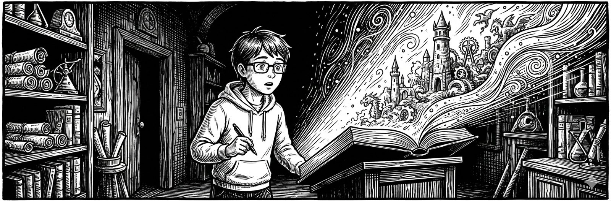
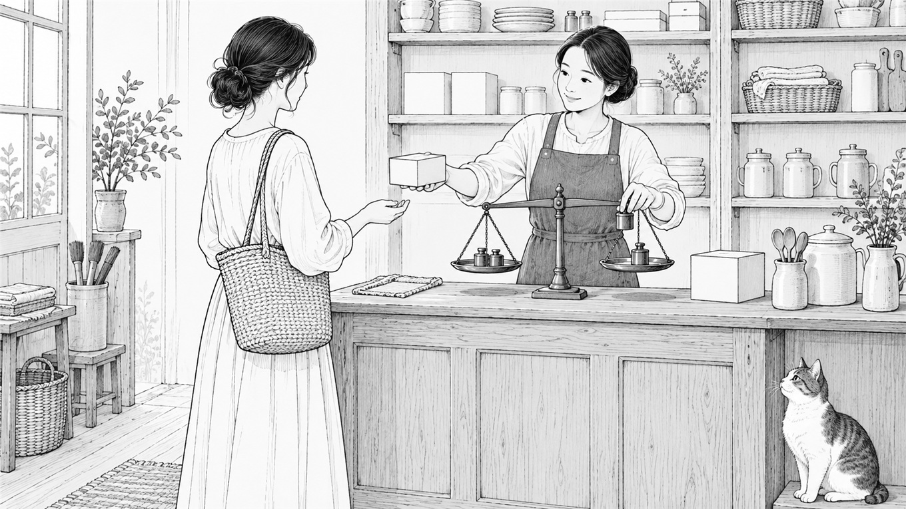
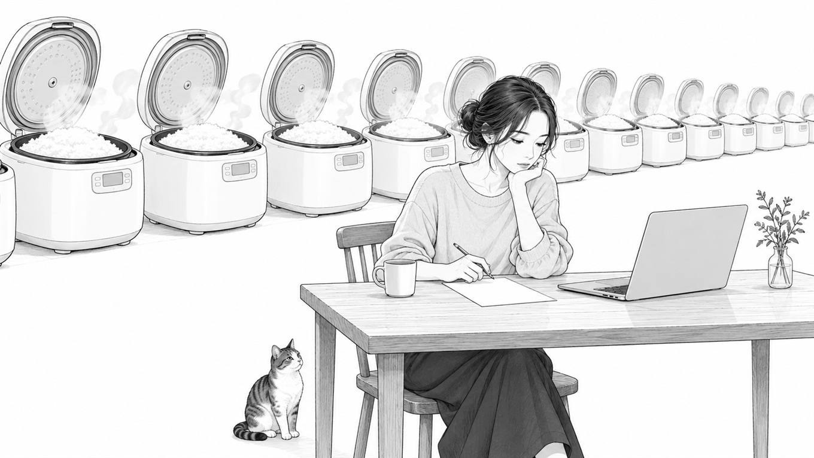
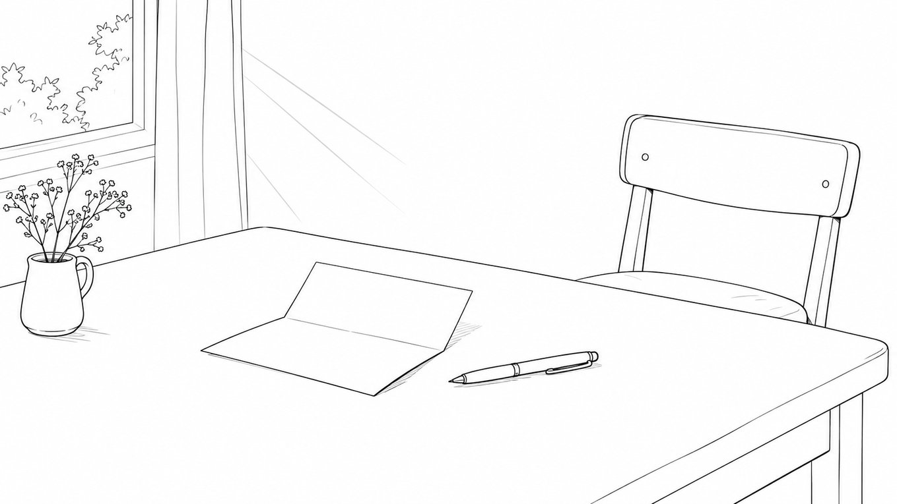
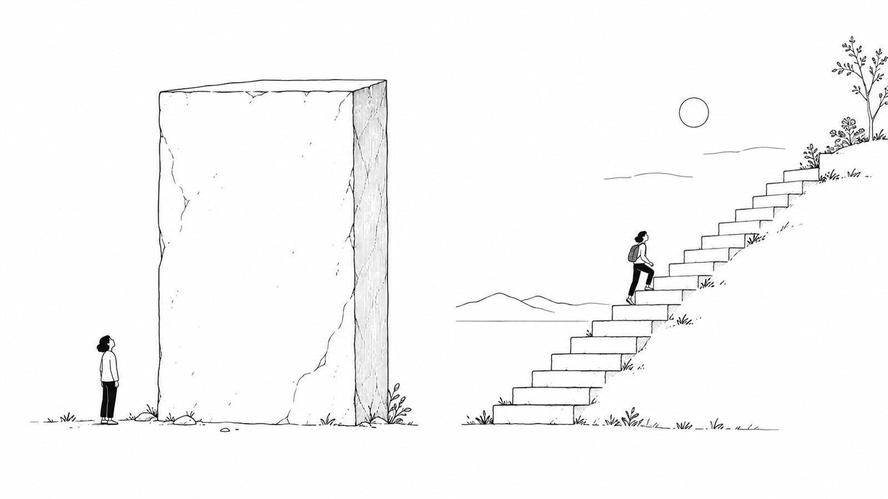

フォロワー約150人の時期に、LINEの友だち追加は14名、そこから成約は4名でした。すごく見えても、率で見れば「普通」。母数より率を上げる考え方と、みんなが同じ方向へ走るハーディングの中で別の道を選んだ話を書きました。
AIを使ってがっかりされるかどうかは、使った量ではなく「どこに」使ったかで決まります。ラーメン屋の電子レンジ、猫動画とAIドラマの違いから、努力ヒューリスティックで線引きを解説します。
値上げが受け入れられる条件の最多は「上げ幅が小さいこと」で43.0%、品質向上は17.1%でした。理由の説明より先に幅の設計が効く理由を、損失回避と参照点依存から、#121の続きとして解説します。

「AIで稼げる」発信が、また増えています。でも、AIを使うこと自体は売上に直結しないことが多い。それでも僕がAIを手放さない理由と、派手な数字を見たときの見方を書きました。
競合が少ない市場を見つけても、それはブルーオーシャンとは限りません。ニッチ戦略とブルーオーシャン戦略の違いを、ダイエット市場と料理教室の実例から考えます。

返金保証は安心させるものではなく、リスクを売り手が引き受ける宣言です。行動経済学の損失回避から、つけるべき商品とつけない方がいい商品の分け方を考えます。

AIに頼めば、投稿ネタも本文もキャプションも一瞬で100個出てきます。でも、その100投稿、本当にあなたが書く必要ありますか？量産できる時代に、発信者に残る価値はどこにあるのかを考えます。
遠くから見ると魅力的だけど近づくとボロが出るタイプと、地味だけど近づくと評価が上がるタイプ。この2つを知っておくと、SNS発信もマンツーマンも、少し見え方が変わります。
募集期間を長くしても、最終的な申込者数はそれほど変わりません。「決める人はもう決めている」「迷う人は締切まで決めない」という2つの心理から、期間設計のほうが良い理由を行動経済アナリストが解説します。

値上げで揉めるのは金額ではなく、納得です。行動経済学の「公正性の知覚」から、個人事業主が既存のお客様に値上げを伝えるときの順番と、避けたい言い方を行動経済アナリストが解説します。

「低単価では稼げない」は、どこまで本当か。ブーム商品と日常の悩みでは、相性のいい売り方が違います。LTV（顧客生涯価値）と「商品の時間軸」から、個人ビジネスでの値付けの考え方を行動経済アナリストが解説します。
売れている商品を真似しても売れないのはなぜか。プロダクトライフサイクルとファッドの考え方から、個人ビジネスでの参入時期の見極めと「降りる力」を行動経済アナリストが解説します。